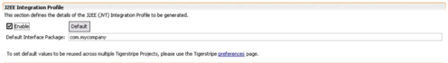

Java Integration Profile Details
Before the Java (J2EE) Integration profile can be generated for a Tigerstripe Project, it must be enabled and properly configured.
The configuration is handled through the Tigerstripe Descriptor of Tigerstripe project.
Make sure the Tigerstripe Perspective is active, navigate to the appropriate Tigerstripe Descpritor in the target Tigerstripe project, and double click on it to open it. Select the Generation tab. The J2EE Integration Profile Section looks like shown below:

The following options are available:
- Enable/Disable the J2EE Integration Profile: if you want Tigerstripe to generate the J2EE Integration Profile for the current project, you need to Enable it.
- Default Interface Package: the default Java package where all Java Interfaces for the J2EE Profile will be generated. Please note, this is the default value to be applied to each Artifact upon creation. Changing this value will not affect existing Artifacts. The factory default value can be applied by pressing the Default button.
© copyright 2005, 2006, 2007 Cisco Systems, Inc. - All rights reserved